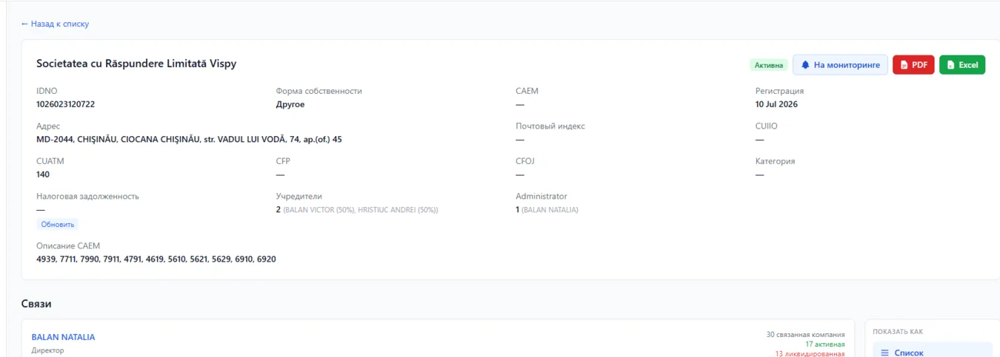
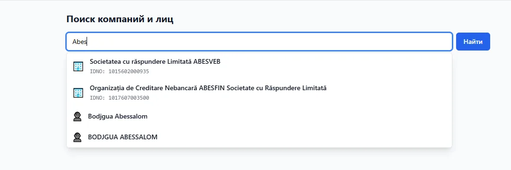
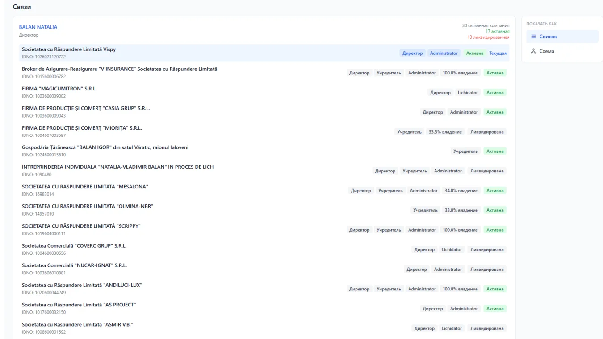
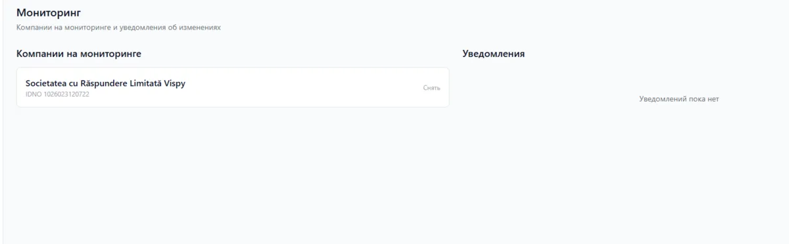
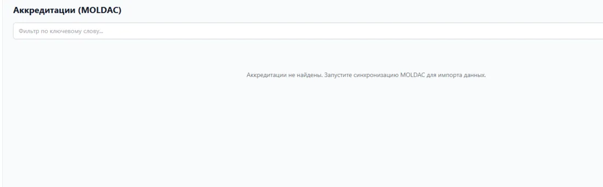

Căutare unificată
Găsiți companii și persoane după denumire, IDNO sau nume, cu separarea rezultatelor pe tipuri.
Verificarea partenerilor de afaceri în Moldova
Căutați o companie sau o persoană asociată, consultați datele de înregistrare, fondatorii, conexiunile și informațiile disponibile care necesită atenție.

Specializare locală
Credibil reunește într-un singur scenariu informațiile disponibile despre companie, persoanele asociate, rolurile și relațiile corporative. Serviciul nu este un portal de stat și nu înlocuiește consultanța juridică.
Patru acțiuni esențiale
Găsiți companii și persoane după denumire, IDNO sau nume, cu separarea rezultatelor pe tipuri.
Consultați fondatorii, administratorii, cotele de participare și companiile asociate prin persoane și organizații.
Păstrați rezultatul verificării prin exportul raportului disponibil în format PDF sau Excel.
Adăugați compania în lista urmărită și consultați notificările disponibile despre modificări.
Direcțiile produsului
Date de înregistrare și clasificare, statut, adresă, CAEM și informații fiscale disponibile.
Fondatori, administratori, roluri, cote de participare și organizații asociate.
Secțiuni tematice și exportul rezultatului verificării în PDF și Excel.
Verificarea existenței datelor despre datorii, litigii, executări, sancțiuni și alte secțiuni disponibile.
Produs funcțional
Cadrele de mai jos provin din produsul Credibil și demonstrează căutarea, cardul companiei și relațiile corporative.


Cardul companiei și relațiile
Credibil arată IDNO, statutul, fondatorii, administratorul, cotele de participare și organizațiile asociate. Relațiile pot fi analizate în modurile Listă și Schemă.
Date disponibile și rapoarte
Prezența datelor diferă de la o companie la alta. Interfața trebuie să distingă între lipsa datelor, lipsa rezultatelor și o secțiune care încă nu a fost completată.

Notificarea demonstrativă arată tipul schimbării și trimite utilizatorul la compania monitorizată. Nu reprezintă un eveniment real.
Monitorizarea schimbărilor
Adăugați compania în monitorizare, reveniți la lista urmărită și consultați notificările disponibile atunci când în sistem apar modificări.
Acțiunea este disponibilă direct în cardul companiei.
Companiile monitorizate sunt grupate într-un singur compartiment.
Puteți deschide compania sau o puteți elimina din listă.
Acreditări MOLDAC
Produsul include filtrarea acreditărilor MOLDAC și o secțiune asociată în cardul companiei. Disponibilitatea și plenitudinea datelor trebuie confirmate înainte de publicare.
Verificați acreditarea
Un scenariu clar
Introduceți denumirea companiei, IDNO sau numele persoanei asociate.
Consultați datele de bază, rolurile, relațiile și secțiunile disponibile.
Exportați raportul sau adăugați compania în monitorizare.
Începeți cu un nume sau IDNO
Cererea introdusă va fi păstrată și deschisă în căutarea Credibil după autentificare.